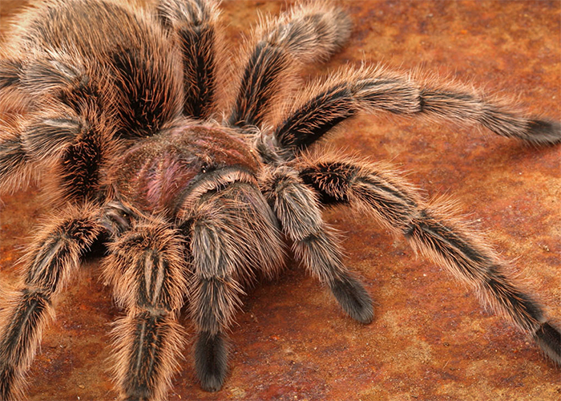
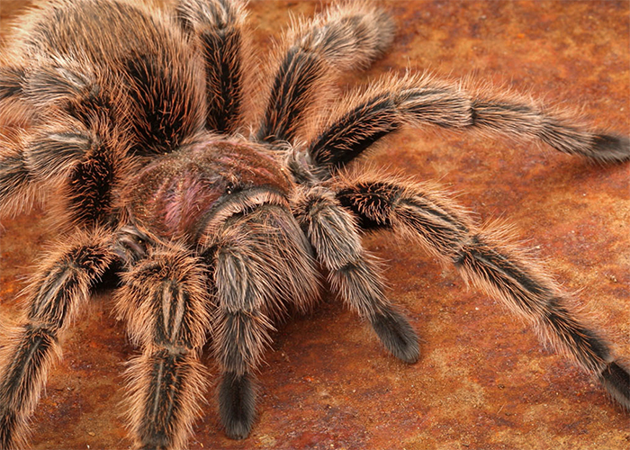
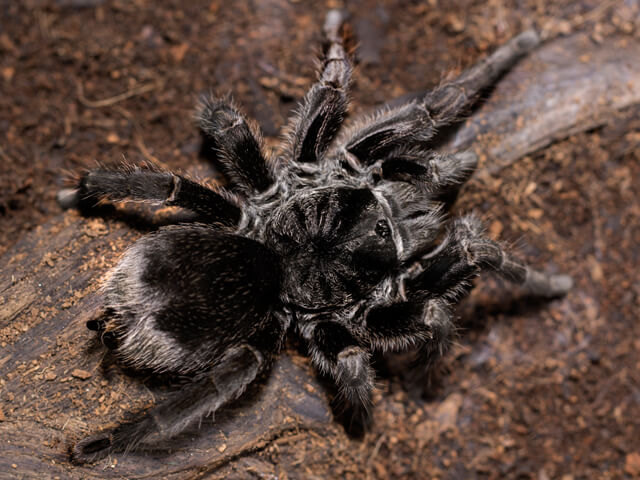
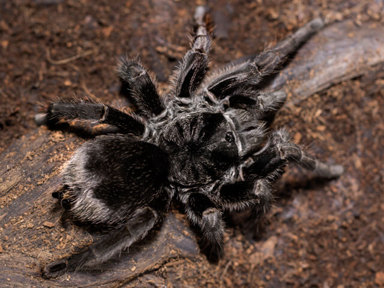

Kas oled kaalunud tarantli koduloomaks võtmist? Oled sattunud õigesse kohta! Sellel leheküljel on kolm erinevat tarantliliiki, kes sobivad suurepäraselt algajatele. Need kolm liiki on tuntud oma rahuliku temperamendi ja lihtsate hooldusnõuete poolest.


| Kategooria | Informatsioon |
|---|---|
| Oodatav eluiga | Emastel ~30a // Isastel ~10a |
| Temperament | Aeglaselt liikuv ja reeglina väga rahulik liik. |
| Suurus | 12-15 cm |
| Elukoha tingimused/terraarium | Vähemalt 60x35x30 plast- või klaasterraarium, millel on ventilatsiooniga turvaline kate. Ideaalis peaks temperatuur olema 23-26°C. Substraadina kasutada turbamulda. Terraariumisse võiks lisada puukoori varjuks, savipotte ja võltstaimi, et jäljendada looduslikku keskkonda. |
| Toitumine | Sööta tuleks neid 1-2 korda nädalas. Nad söövad asju nagu: ritsikad, prussakad, putukad, jahuussid. Joogiks peaks olema vesi kogu aeg kättesaadav. |
| Käsitsemine | Ei vaja sotsialiseerumist, kuigi võib õrnalt käsitseda. Käsitsemisseansid tuleks hoida lühikesed, et vältida üleliigset stressi. |
 


| Kategooria | Informatsioon |
|---|---|
| Oodatav eluiga | Emastel ~25a // Isastel ~6a |
| Temperament | Neid peetakse rahulikeks, kes liiguvad üsna aegalselt ja ei kipu hammustama. Seetõttu on nad ka üks populaarsemaid liike lemmikloomakaubanduses. |
| Suurus | 12-13 cm |
| Elukoha tingimused/terraarium | 50x25x25 mõõtudes klaasterraarium koos kattega ja hea ventilatsioobiga peaks olema sobilik, piisavalt suur, et neil oleks võimalus ringi liikuda. Temperatuur peaks olema vahemikus 22-23°C. Substraadina sobib turbasammal, kemikaalivaba muld ja hakitud kookospähli koort. Terraarium peaks sisaldama peidukohta, mis on õõnsast palgist või puhtast triivpuutükist. Kunsttaimed või elusad taimed, et jäljendada looduslikku keskkonda. |
| Toitumine | Söövad 1-2 korda nädalas. Peamine toiduallikas on ritsikad. Joogikauss peab olema kogu aeg olemas. |
| Käsitsemine | Õrnalt käsitsemine on sobilik, kuigi nad ei hammusta tavaliselt, peab olema ettevaatlik, sest nende hammustus on mürgine. |
 


| Kategooria | Informatsioon |
|---|---|
| Oodatav eluiga | Emastel ~18a // Isastel ~10a |
| Temperament | Rahulikud ja aeglaselt liikuvad. Suurepärased omanikele, kes otsustavad tarantleid käsitseda. |
| Suurus | Kuni 18 cm |
| Elukoha tingimused/terraarium | 50x25x25 klaas- või plastterraarium koos hea ventilatsiooniga (elukoha külgedel olevad augud). Temperatuuriks sobib vahemikus 23-29°C. Substraadina kasutada kemikaalivaba mulda või jahvatatud kookoskiudu. Peidukohtade tegemine on tarantli heaolu jaoks oluline. Terraariumisse panna võltstaimi või elusaid taimi ning puutükke. |
| Toitumine | Söövad 1-2 korda nädalas. Brasiilia must tarantel on entusiastlik sööja ja võtab kõik kättesaadava omale saagiks. Peamised toiduallikad on elus ritsikad, jahuussid, dubia särg. Joogikauss peab olema alati kättesaadav. |
| Käsitsemine | Kuigi nad on rahulikud, peab käsitsemise ajal ikka ettevaatlik olema. Mitte hoida neid lähedal oma näole. |